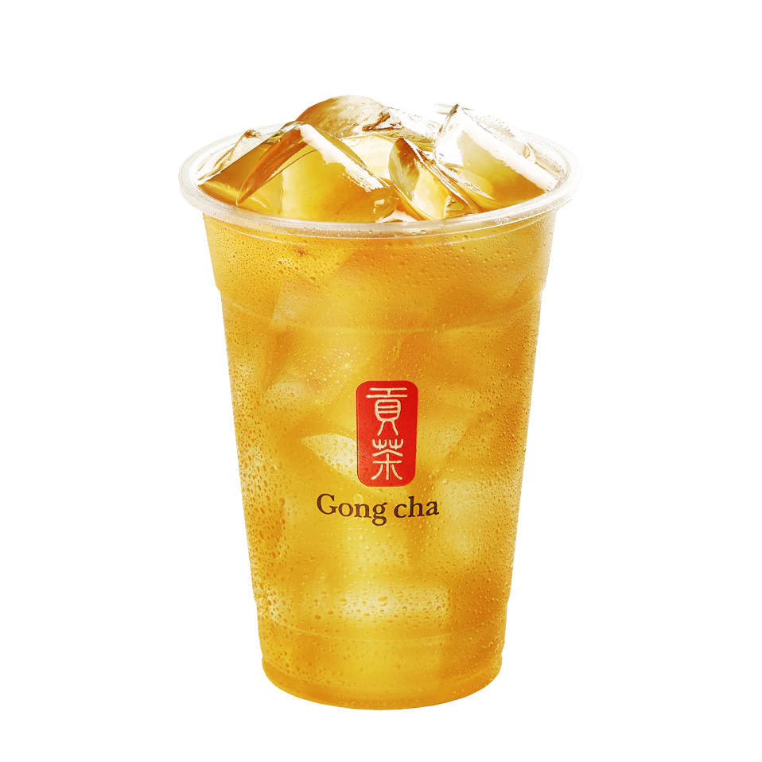
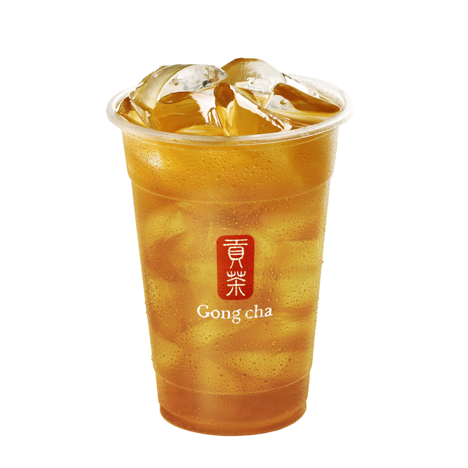
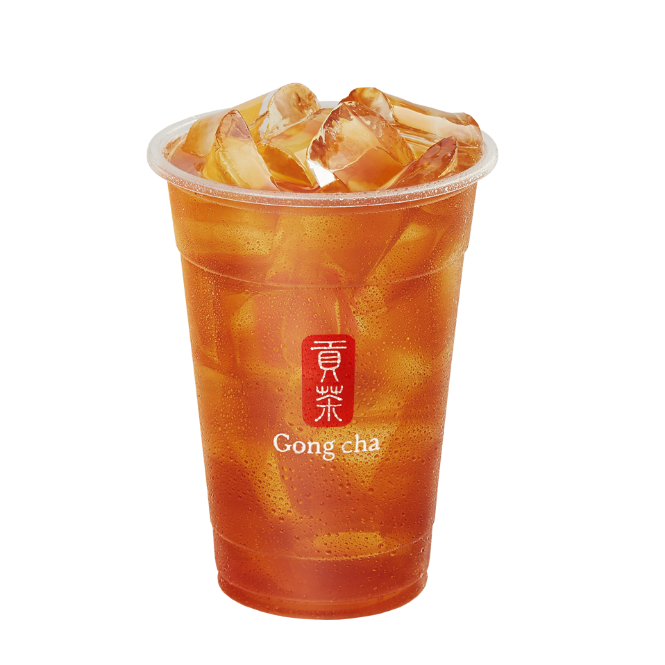

<!doctype html>
<html lang="ja">
	<head>
		<meta charset="UTF-8">
		<title>GongCha/title>
		<link rel="stylesheet" href="css/stylesheet.css">
		<link href="https://fonts.googleapis.com/css?family=Lobster" rel="stylesheet" type="text/css">
	</head>
	<body>
		<div id="wrapper">
			<div class="header">
				<a>
					
				</a>
				<ul id="menu">
					<li><a href="GongCha.html">GongCha</a></li>
					<li><a href="home.html">紹介</a></li>
					<li><a href="about.html">おすすめのチア</a></li>
					<li><a href="menu.html">商品メニュー</a></li>
					<li><a href="map.html">住所</a></li>
				</ul>
				<div class="clearfix"></div>
			</div>
		</div>
			<div class="img">
				
			</div>
			<h2 id="about">あなただけの“My Gong cha”を</h2>
			<div class="about">
				<p>
					ゴンチャの最大の魅力は、ベースとなるティー、ホット／アイス、ドリンクの甘さや氷の量、トッピングの追加など、
					お好みに合わせて様々な組み合わせが楽しめることです。<br>
					バリエーション豊かなカスタマイズで、ぜひお気に入りの“My Gong cha”を見つけてください。
				</p>
				
			</div>
			<h2 id="about">4種類のベースティー</h2>
			<div class="about">
				<p>
					まずは、「台湾ティーカフェ」ならではの、こだわりの4種類からベースティーをお選びください。<br>
					ゴンチャの提供するティーの特徴は、豊かな香りと深い味わいにあります。発酵具合によって、それぞれのお茶の風味が異なります。
				</p>
			</div>
			<h3 id="about">ジャスミン　グリーンティー</h3>
			<div class="home1">
				<p></p>
				<p>
					鮮やかな緑色が特徴の、香り豊かなジャスミンティーです。緑茶ならではのほかな渋みや、スラ霧とした喉越しが楽しめます。
				</p>
			</div>
			<h3 id="about">阿里山　ウーロンティー</h3>
			<div class="home1">
				<p></p>
				<p>
					阿里山の高級茶葉を使用した爽やかなううろん茶。鮮やかな黄金色が特徴の、限りなく緑茶に近いすっきりと爽やかな風味のううろん茶です。
				</p>
			</div>
			<h3 id="about">ウーロンティー</h3>
			<div class="home1">
				<p></p>
				<p>
					台湾茶の代表的なカテゴリーである青茶の中で日本でもっとも親しまれている台湾茶です。本場ならではの豊かな香りとコクが自慢です。
				</p>
			</div>
			<h3 id="about">ブラックティー</h3>
			<div class="home1">
				<p></p>
				<p>
					深みのある赤色が特徴の紅茶。発酵度が緑茶や青茶に比べて最も高いため、お茶本来の持つ深みのある味わいが楽しめます。
				</p>
			</div>
			<p style="text-align: center;">share us on</p>
				<div style="text-align:center"><a data-site="" class="ssba_twitter_share" href="http://twitter.com/share?url=https://www.gongcha.co.jp/menu/findyourtea/&amp;text=FIND+YOUR+TEA+%E3%81%82%E3%81%AA%E3%81%9F%E3%81%A0%E3%81%91%E3%81%AE%E2%80%9CMy+Gong+cha%E2%80%9D%E3%82%92+" target="_blank"></a><a data-site="" class="ssba_facebook_share" href="http://www.facebook.com/sharer.php?u=https://www.gongcha.co.jp/menu/findyourtea/" target="_blank"></a></div>
			<div id="footer">
				<p>Copyright &copy; 2019 - GongCha</p>
			</div>

	</body>
</html>	